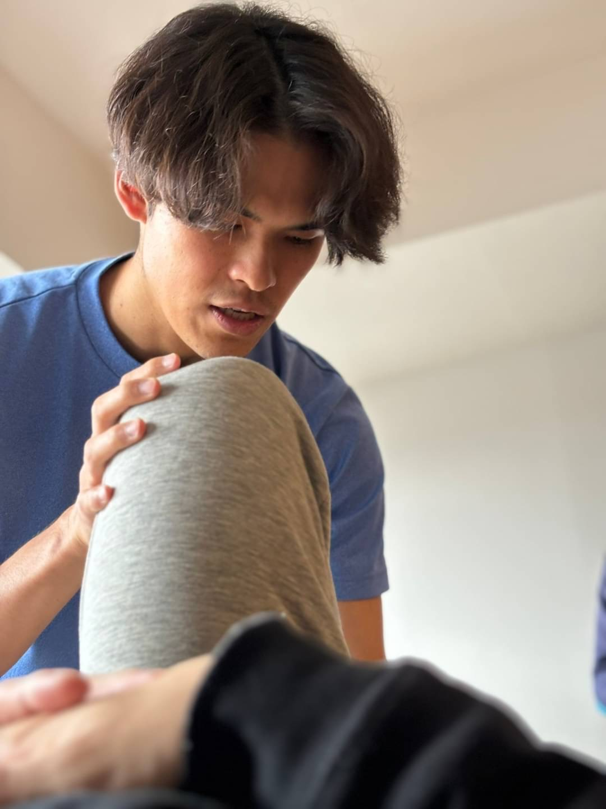

繰り返す痛みを、
根本から変えたいランナーへ
体験セッションのご案内
通常セッション
50分
¥8,800
体験セッション
80分
¥4,400税込
LINEのトークが開きます。「体験」を送信してください。
体験セッションで得られること
痛みが出ている場所へどれだけアプローチしても痛みを繰り返してしまうのは、本当の原因となる「動き」が変わっていないからです。体験セッションでは、原因を分析し、その原因となる動きの改善に取り組みます。
痛みの原因になっている動きがわかる
その動きが変わることを、その場で確かめられる
体験セッションの流れ
ヒアリング
身体の状態やこれまでの取り組み、経過を詳しくお聞きします。
分析・評価
動作検査を実施します。ヒアリングと検査から、なぜ痛みが起きてしまうのか、その原因となる動きを分析します。
エクササイズ・トレーニング
原因となる動きに対して、必要なエクササイズやトレーニングを行います。
振り返り
前後で動きがどう変わったのかを振り返りながら、今後の改善の方向性をお伝えします。
継続サポートによる変化

鼠蹊部の痛みによって長い時間走れないという悩みを持つランナー
ランジ動作時の膝が内に入る動きを改善。

鵞足炎による膝痛で走れなかったランナー
しゃがみ込みの時の動作エラーを改善し、痛みなく走れるように回復。

ランニングフォーム改善に取り組むランナー
背中から臀部にかけての連動性を上げ、股関節の可動域が大幅改善。

フルマラソン後の膝痛に悩んでいたランナー
痛みで左右均等にしゃがめない状態から、痛みなくしゃがめるように。
お客様の声
一見、患部に関係のない様な動きでも、ケアを続けていくと確実に患部に効いていて、いつもびっくりしています！
痛いところや変なクセで硬くなってしまったところを瞬時に見抜き、エクササイズを教えてくださっていつも治るので目からうろこでした！
続ければ確実に変わることを実感しています。とにかく続けてみよう。
※ 変化の感じ方には個人差があります。

中学時代、東海総体・全国大会を目指して練習を重ねていた2年の冬、腰椎分離症を発症。3年生最後の夏の大会を走れずに終わった経験が、今のサポートの原点です。
その後、大学生になってフルマラソンを始め、ランニング仲間と走る時間の中で、「走れることの幸せ」を改めて感じました。
怪我で走れない悔しさと、仲間と走れる喜び。この二つの経験が重なり、怪我なく走り続けられること、記録に挑戦し続けられることをサポートしていけるトレーナーになりたいと思うようになりました。
痛みなく走れる身体を目指す
根本改善プログラム
痛みなく走れる身体を取り戻すには、痛みの原因となる動きのクセから変えていくことが重要です。一度動きが良くなっても、動きのクセは時間が経てばまた元に戻ってしまいます。
Re Moveでは、症状や重症度に合わせて3〜6か月で根本改善を目指すプログラムをご案内しております。希望される方は、プログラム終了後もパフォーマンス向上やメンテナンスのために継続的にサポートさせていただいております。
体験セッションで変化を感じていただき、痛みなく走れる身体を手に入れたいという強い思いをお持ちのランナーに、ご提案させていただいています。
よくある質問
Q. 対面とオンライン、どちらでも受けられますか？
はい、どちらも対応しています。ご希望や状態に合わせてご案内します。
Q. どんな場所でセッションを行いますか？
対面は愛知県内のランニングコースのある公園などで実施します。実施場所はご相談のうえ決定します。オンラインはZoomを使い、室内でも実施できます。動きの分析があるため、スペースの確保が必要です。
Q. 追加で費用がかかることはありますか？
実施場所によっては交通費を、施設を利用する場合は施設費を別途いただく場合があります。金額はご相談の際にお伝えします。
Q. 支払い方法とキャンセルについて教えてください。
銀行振込など、セッション実施前にお支払いいただきます。前日までのキャンセルは返金いたします。当日のキャンセルは返金いたしかねます。
Q. 痛みが強くても受けられますか？
はい。痛みが強い方にこそ受けていただきたいと考えています。まず今の状態をうかがい、無理のない範囲で内容を調整しながら進めます。
※ 医師の診断を受けている方は、その診断や指示を優先してください。
Q. 無料フォーム分析との違いは何ですか？
無料フォーム分析は、送っていただいた動画を見て原因をお伝えするところまでです。体験セッションは、その場で身体を動かしながら確認し、必要なエクササイズやトレーニングまで行います。先に無料分析を受けていなくてもお申し込みいただけます。

痛みなく走れる身体を
取り戻す一歩を
何が原因なのかが分かれば、やるべきことが決まります。まずは体験セッションで、いまの身体と動きを確かめてみませんか。
体験セッション 80分 ¥4,400税込
LINEのトークが開きます。「体験」を送信してください。